EEB 603 Bioinformatics Tutorial
An Example GitHub Webpage - Intro to Plotting
Your Full Name
2023-11-09
## Load the packages
#install.packages("gapminder")
library(gapminder)## Warning: package 'gapminder' was built under R version 4.3.2head(gapminder)## # A tibble: 6 × 6
## country continent year lifeExp pop gdpPercap
## <fct> <fct> <int> <dbl> <int> <dbl>
## 1 Afghanistan Asia 1952 28.8 8425333 779.
## 2 Afghanistan Asia 1957 30.3 9240934 821.
## 3 Afghanistan Asia 1962 32.0 10267083 853.
## 4 Afghanistan Asia 1967 34.0 11537966 836.
## 5 Afghanistan Asia 1972 36.1 13079460 740.
## 6 Afghanistan Asia 1977 38.4 14880372 786.#Base plot
plot(x=gapminder$gdpPercap,y=gapminder$lifeExp)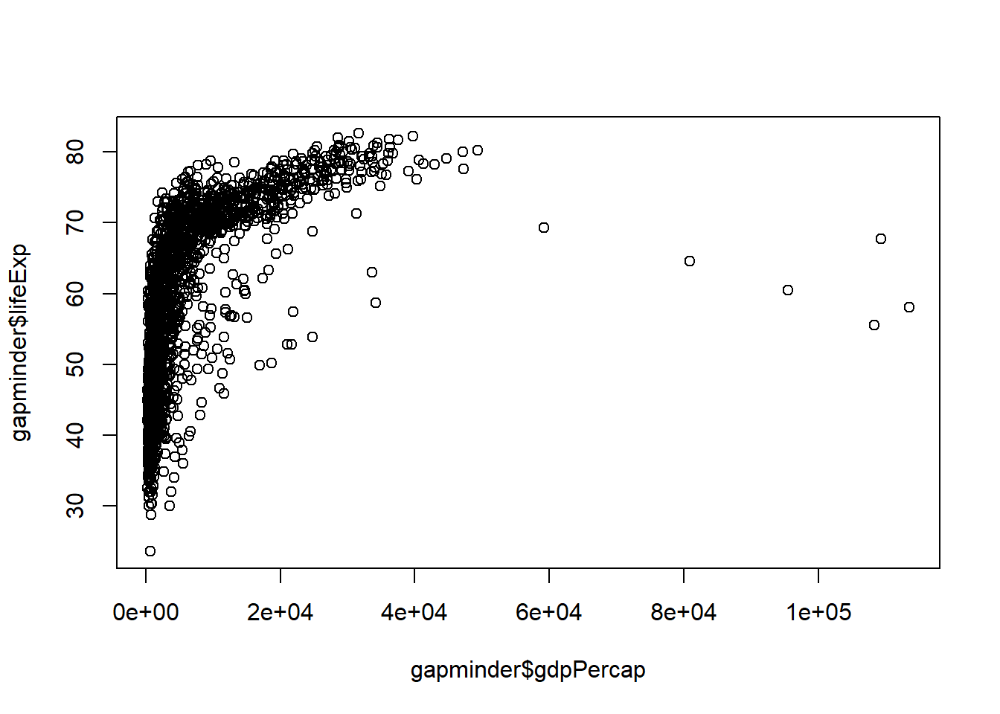
#The default graph is scatter plot. However, you can specify your choice of graph using an argument code
plot(x=gapminder$gdpPercap,y=gapminder$lifeExp, type="line")## Warning in plot.xy(xy, type, ...): plot type 'line' will be truncated to first
## character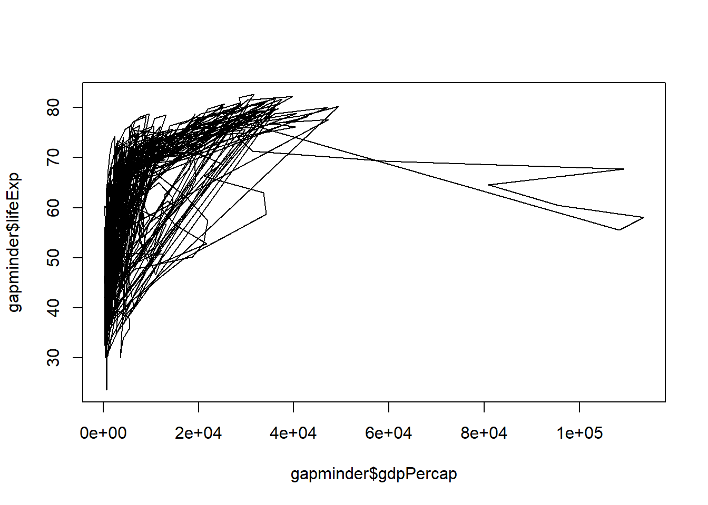
#the code above will produce a line graph.
#You can also use a boxplot to plot your data.
boxplot(gapminder$lifeExp ~ gapminder$continent)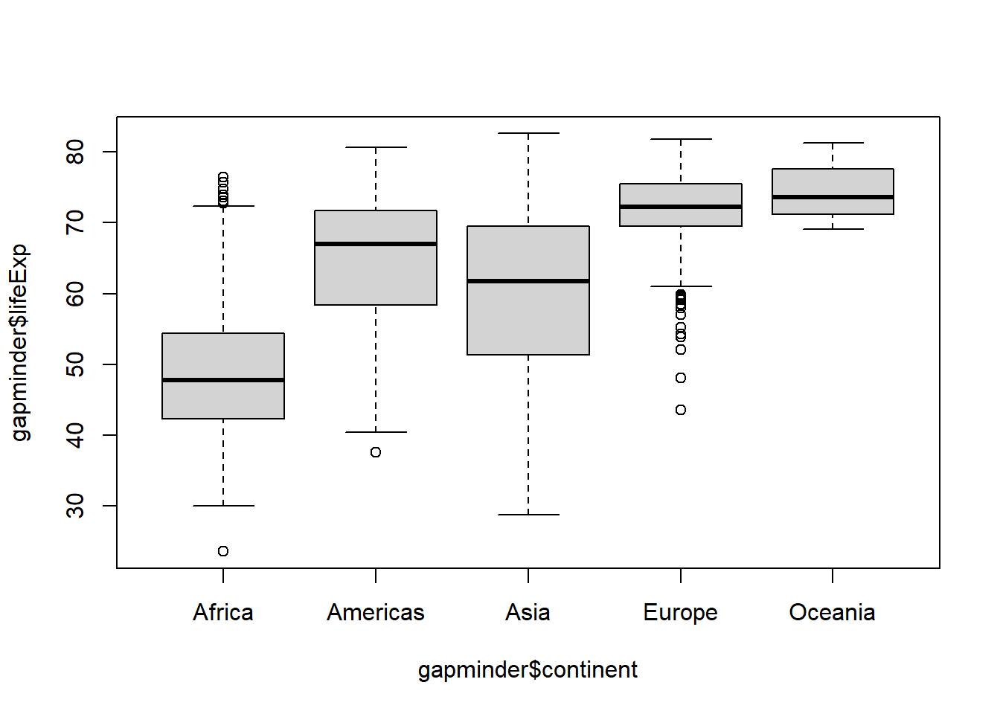
#The syntax "~" above is used for several things. In the code above it reads "Life expentancy 'as determined' by Continent"
#It is important to also know that box plot work when one of the data type is a categorical data
#We can also make histogram, which is used to see the distribution of a data
hist(gapminder$lifeExp,col="pink")
#Notice in the code above that there is an argument "col" which helps to add color to the graph.
#GGPLOT is much cleaner and better to create graphs for publications
#install.packages("ggplot")
library(ggplot2)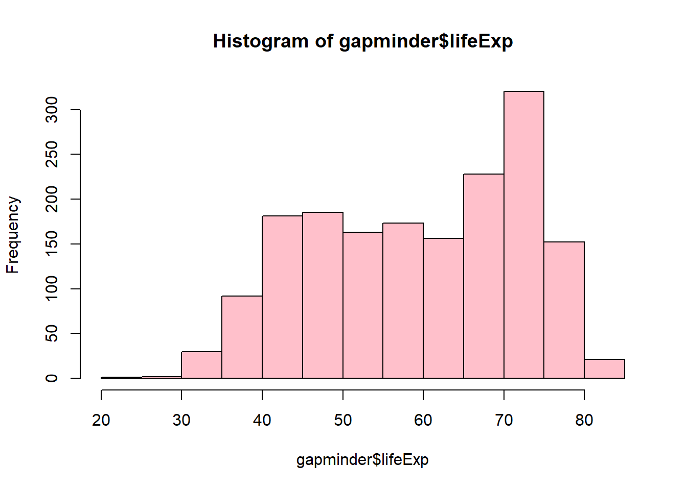
ggplot(data=gapminder,mapping=aes(x=gdpPercap,y=lifeExp))
#The argument 'mapping' helps to create a template where our data will be plotted
#Notice that, the '$' is not used to call out the data in a dataset, this is because of the 'aes' which tell the computer to look for the vectors inside the data 'gapminder' that was written before it.
#The code above doesn't include any graph, it sets the stage for the graphs. 'gg' in 'ggplot' stands for 'grammar of graphics'.
#In order to continue to use the 'template' we add a '+' sign after the code. This tells the computer that everything that will come after should be on it.
ggplot(data=gapminder,mapping=aes(x=gdpPercap,y=lifeExp))+
geom_point()
#geom_points() helps to add scatter plot
#geom_line helps to add line graphs
ggplot(data=gapminder,mapping=aes(x=gdpPercap,y=lifeExp))+
geom_line()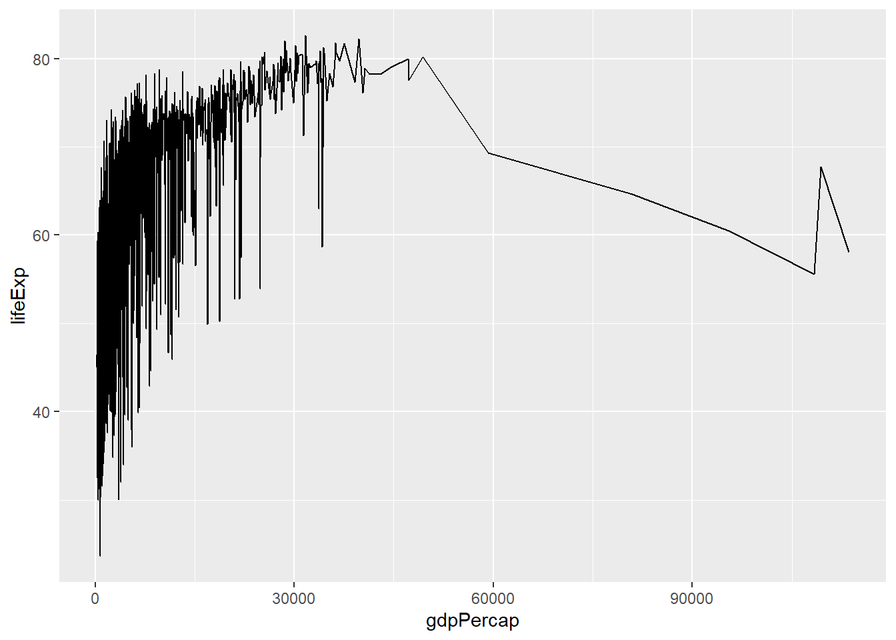
#To determine how something has changed overtime
ggplot(data=gapminder,mapping=aes(x=year,y=lifeExp))+
geom_line()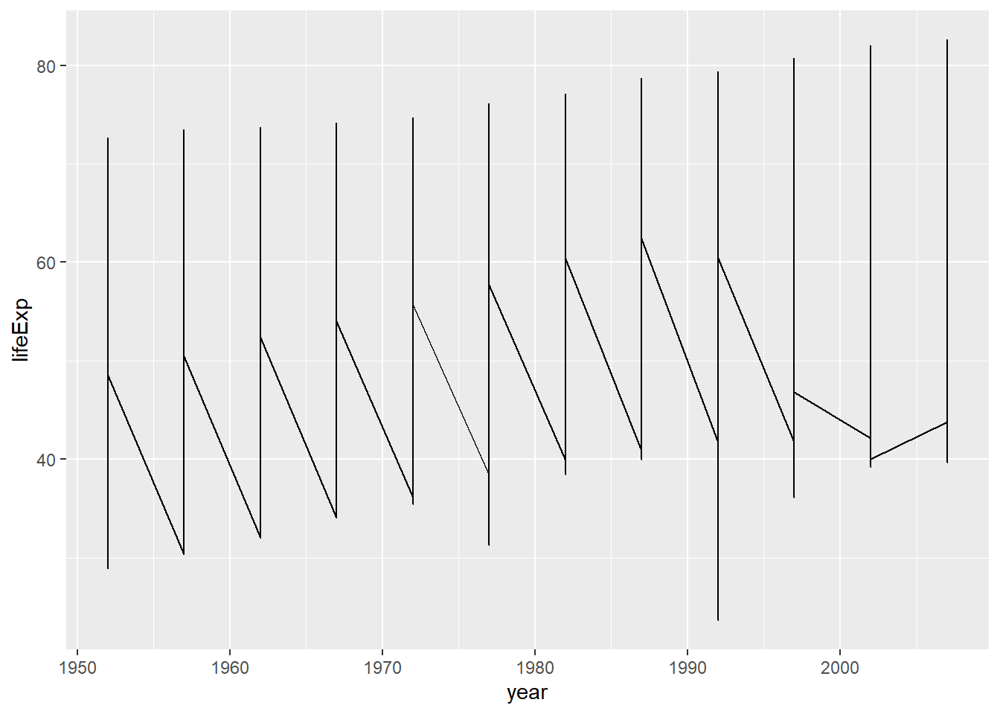
#Change overtime by country will include an additional argument
ggplot(data=gapminder,mapping=aes(x=year,y=lifeExp,by=country))+
geom_line()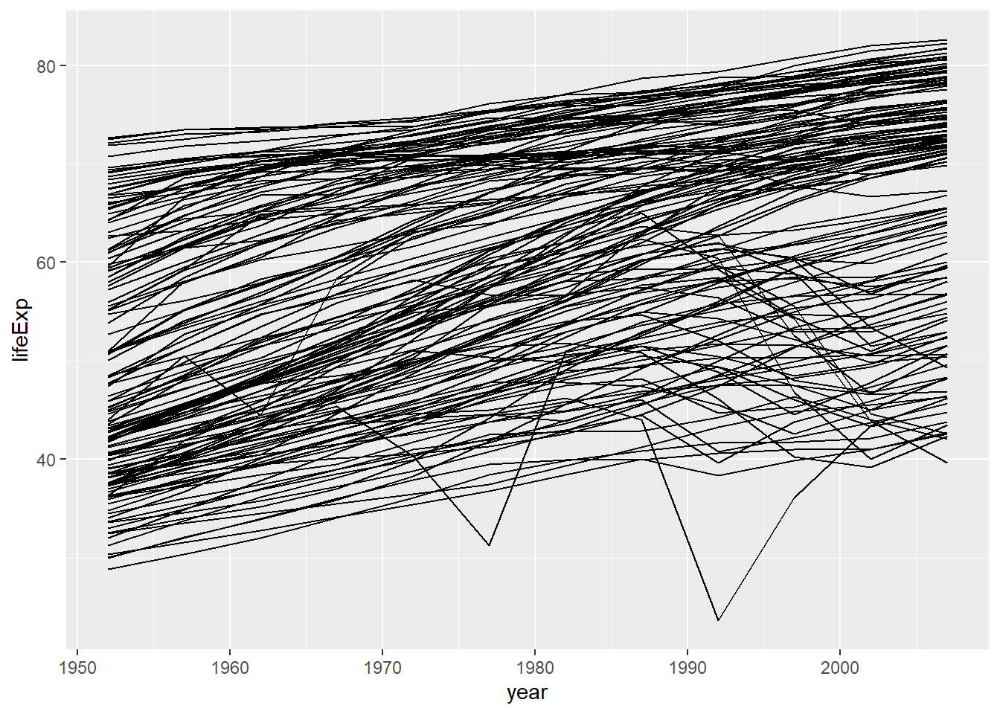
#You can add color by country, by using the function 'color='
ggplot(data=gapminder,mapping=aes(x=year,y=lifeExp,by=country,color=continent))+
geom_line()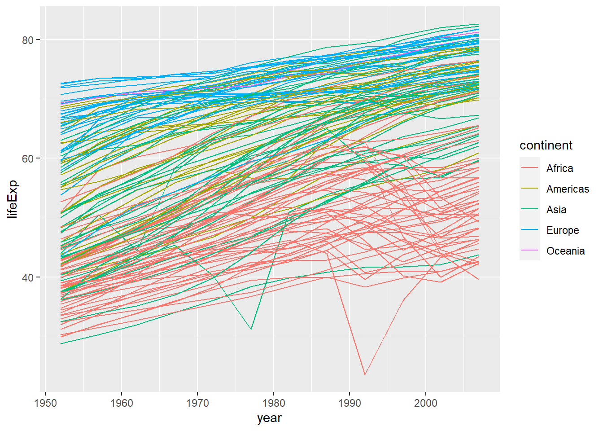
ggplot(data=gapminder,mapping=aes(x=gdpPercap,y=lifeExp))+
geom_point()
#We can rescale our x-axis for. This is helpful if you want to see your points more clearly
ggplot(data=gapminder,mapping=aes(x=gdpPercap,y=lifeExp))+
geom_point()+scale_x_log10()
#Now our data is more dispersed because we have enlarged the scale.
#We can also change the transparency which is known as the alpha value
ggplot(data=gapminder,mapping=aes(x=gdpPercap,y=lifeExp))+
geom_point(alpha=0.5)+scale_x_log10()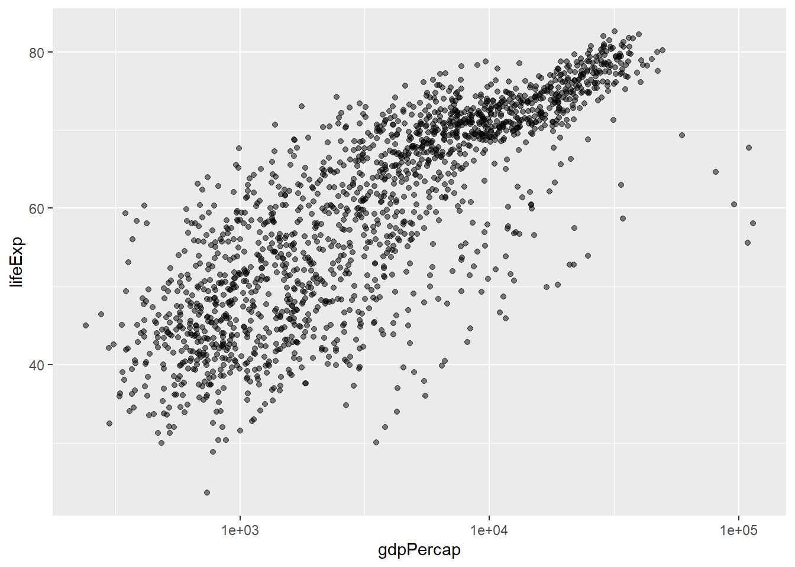
#When you run the code above, you will notice that the plot are more transparent and you can see more data clearly
#How TO ADD A SMOOTH FIT OR BEST FIT LINE ACROSS A GRAPH i.e a line that is closes to all the data
ggplot(data=gapminder,mapping=aes(x=gdpPercap,y=lifeExp))+
geom_point(alpha=0.5)+scale_x_log10()+
geom_smooth(method="lm")## `geom_smooth()` using formula = 'y ~ x'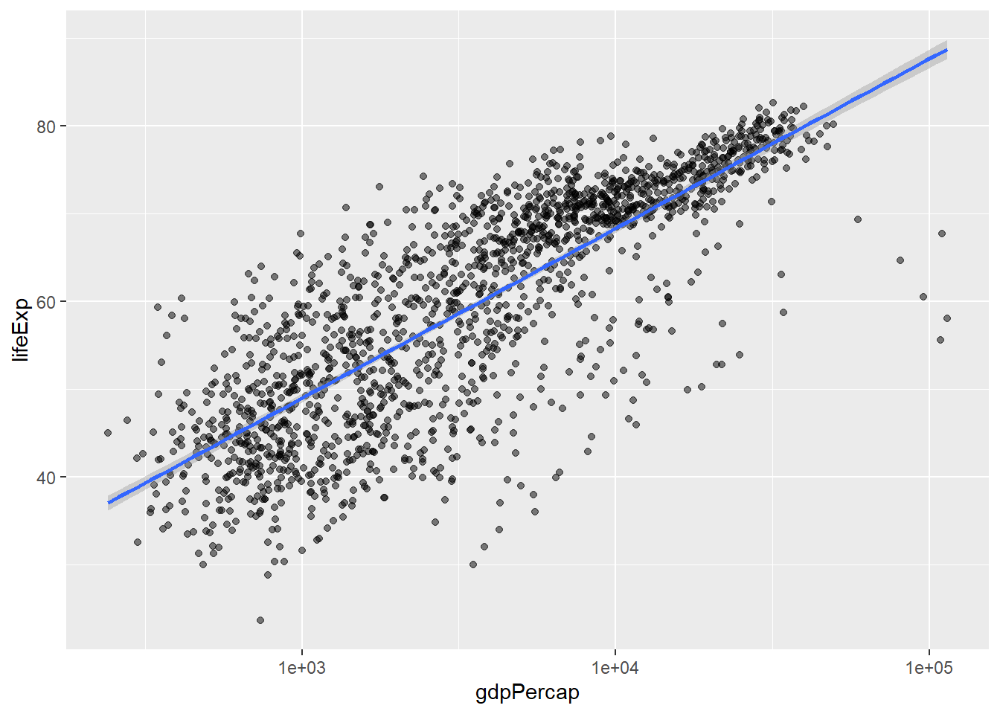
#In the code above, we added, a linear model line into the graph
#We can change the color and size of the line.
ggplot(data=gapminder,mapping=aes(x=gdpPercap,y=lifeExp))+
geom_point(alpha=0.5)+scale_x_log10()+
geom_smooth(method="lm",color="red",size=3)## Warning: Using `size` aesthetic for lines was deprecated in ggplot2 3.4.0.
## ℹ Please use `linewidth` instead.
## This warning is displayed once every 8 hours.
## Call `lifecycle::last_lifecycle_warnings()` to see where this warning was
## generated.## `geom_smooth()` using formula = 'y ~ x'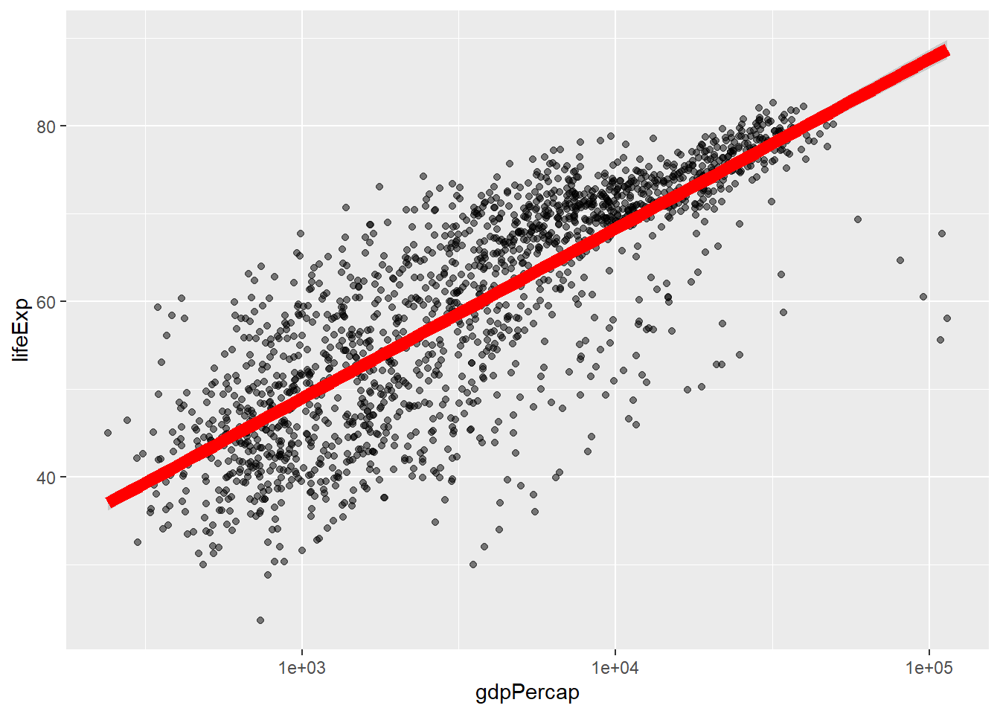
#HOW TO CREATE A SUBSET FROM A DATA E.G GAPMINDER
#Let's create a new data set that includes all the information of America in gapmider
americas<-gapminder[gapminder$continent=="Americas",]
#Important notice are the use of double equal to sign. Also, the comma at the end of 'Americas' was added to tell the computer that we need all the columns in the row 'Americas'.
americas## # A tibble: 300 × 6
## country continent year lifeExp pop gdpPercap
## <fct> <fct> <int> <dbl> <int> <dbl>
## 1 Argentina Americas 1952 62.5 17876956 5911.
## 2 Argentina Americas 1957 64.4 19610538 6857.
## 3 Argentina Americas 1962 65.1 21283783 7133.
## 4 Argentina Americas 1967 65.6 22934225 8053.
## 5 Argentina Americas 1972 67.1 24779799 9443.
## 6 Argentina Americas 1977 68.5 26983828 10079.
## 7 Argentina Americas 1982 69.9 29341374 8998.
## 8 Argentina Americas 1987 70.8 31620918 9140.
## 9 Argentina Americas 1992 71.9 33958947 9308.
## 10 Argentina Americas 1997 73.3 36203463 10967.
## # ℹ 290 more rowsView(americas)
#HOW TO MAKE SMALL MULTIPLES OF DATA
#Using the subset 'americas'
ggplot(data=americas,mapping=aes(x=year,y=lifeExp))+
geom_line()+
facet_wrap(~country)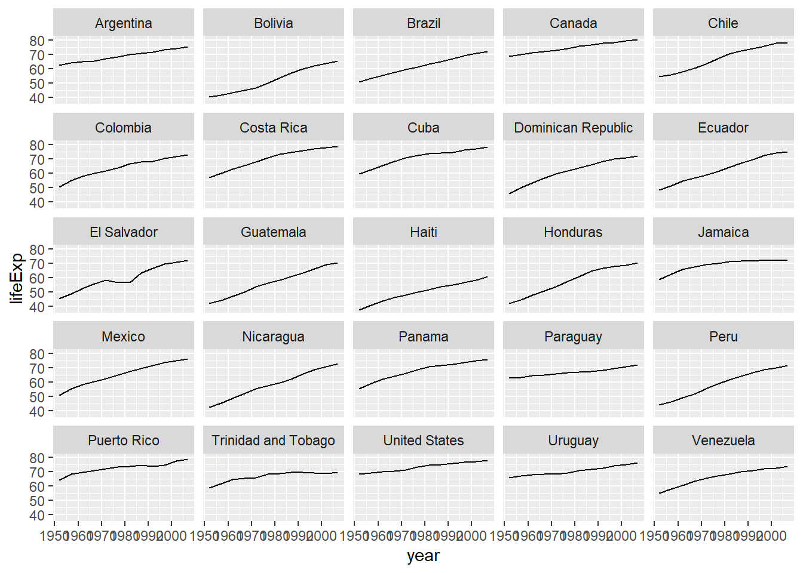
#You can see that we have created a subset of life expectancy against year in countries in america.
#One thing we should note is that text of the years on x axis and the values on y axis are not that clear. We can remedy this using the function 'theme'
ggplot(data=americas,mapping=aes(x=year,y=lifeExp))+
geom_line()+
facet_wrap(~country)+
theme(axis.text.x=element_text(angle=45))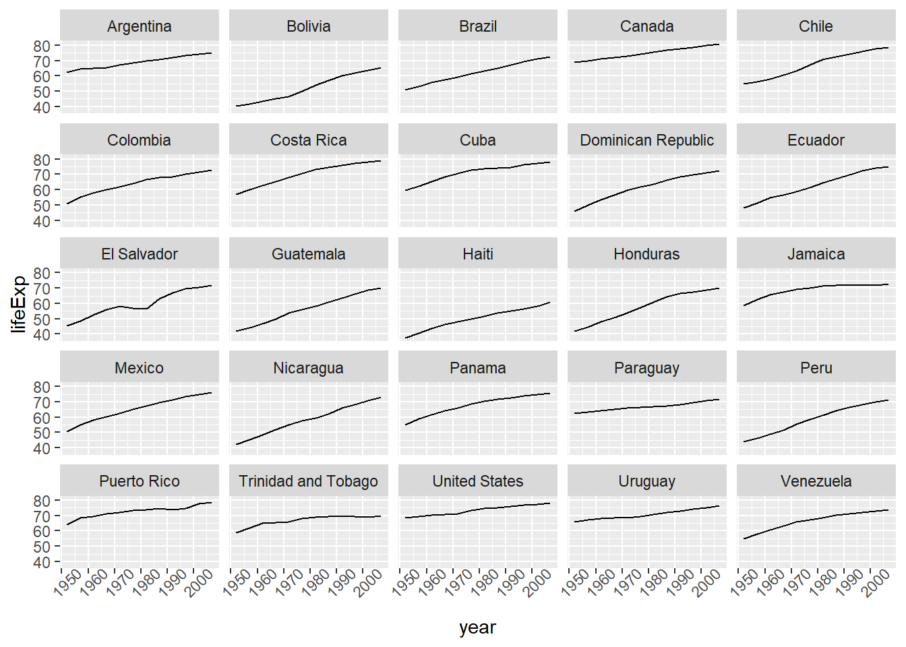
#Now the years are not overlapping with each other.
#Also, the X and Y axis can be renamed on the graph using 'xlab' and 'ylab' functions.
ggplot(data=americas,mapping=aes(x=year,y=lifeExp))+
geom_line()+
facet_wrap(~country)+
theme(axis.text.x=element_text(angle=45))+
xlab("Year")#Observe that the X-axis has been change from 'year' to 'Year'
ggplot(data=americas,mapping=aes(x=year,y=lifeExp))+
geom_line()+
facet_wrap(~country)+
theme(axis.text.x=element_text(angle=45))+
xlab("Year")+
ylab("LifeExpectancy")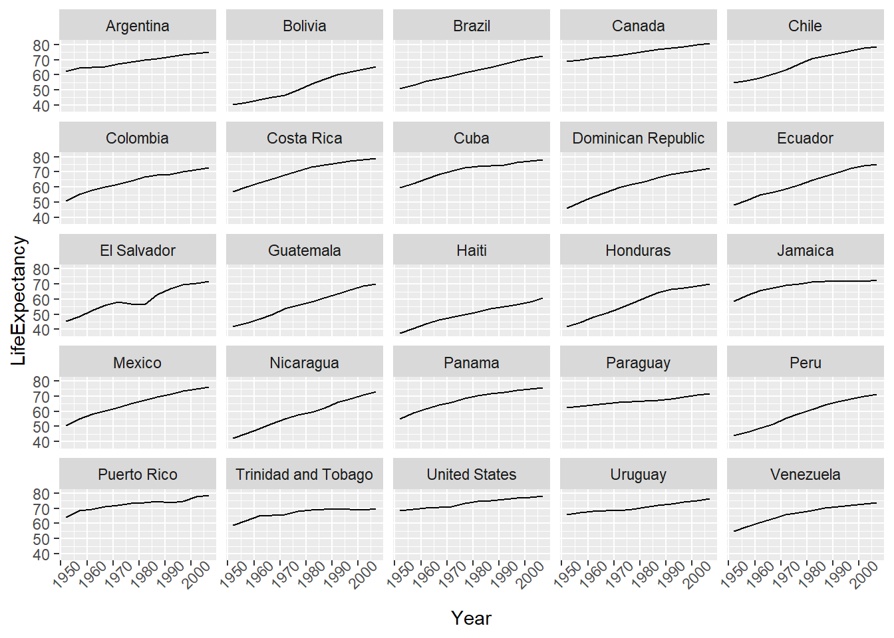
#Also the y axis has been change from 'lifeExp' to 'LifeExpectancy'
#HOW TO SAVE A FIGURE
#You save a figure using the 'ggsave' function.
#However, before you do that you will have to make the figure into an object that will be saved in the environment.
#Here I will make it object 'p' in my environment
p<-ggplot(data=americas,mapping=aes(x=year,y=lifeExp))+
geom_line()+
facet_wrap(~country)+
theme(axis.text.x=element_text(angle=45))+
xlab("Year")+
ylab("LifeExpectancy")
#Now I can save it.
ggsave(filename="./AmericasLifeExp.png",plot=p,width=20,height=15,dpi=300,units="cm")
#Now, it is saved in your project directory.
#The ggsave function will help you meet the specific journal requirements for each publication.